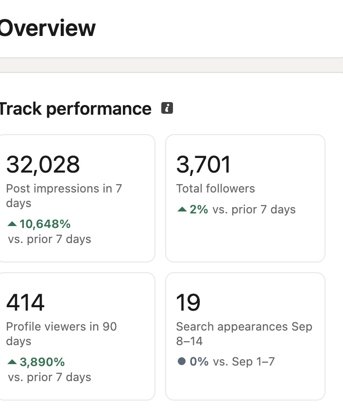
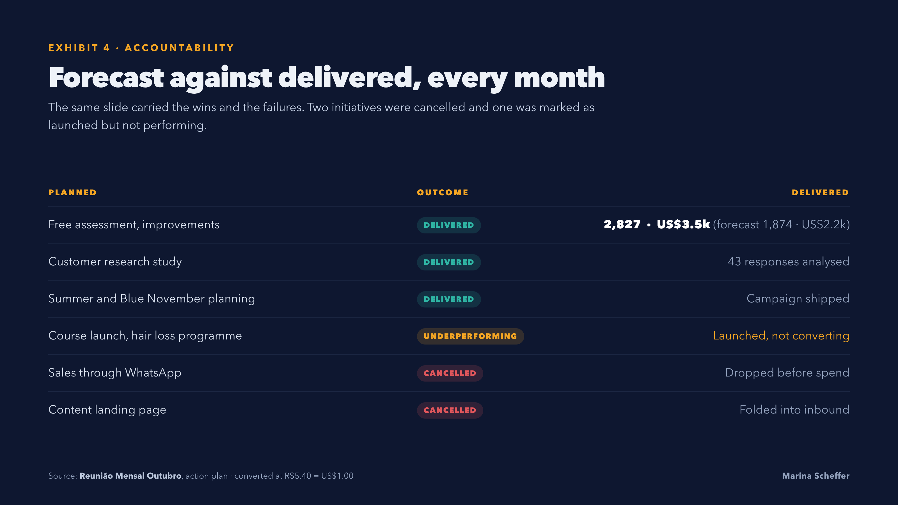
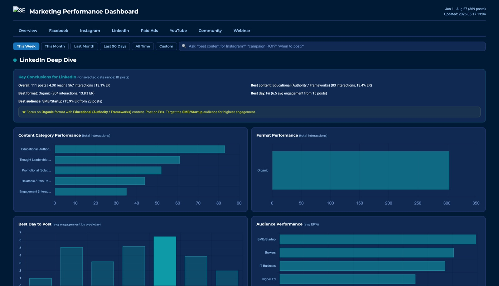

My own account
I write my own LinkedIn by hand and run it the way I'd run a client's: one test a week, the prediction written down before the post goes out.
One post did 31,542 impressions, in an account that used to do about 300 a week
A text-only personal story, around 480 words, no image and no link. It kept spreading for three days and peaked on the third, so I now schedule around that wave instead of posting into it.

LinkedIn analytics, Sep 11 to 17, 2026Writing as the founder
The posts go out under the founder's name, so they have to sound like that person and nobody else. I write in first person from what they actually did and saw, and I use AI for research and speed, never as the voice.
The weekly loop
- Interview + past postshow they talk, what they never say
- Voice filerules, words, banned phrases
- Week of draftsin a doc, with the visual
- Founder editsapprove or change
- Edits become rulesthe next draft starts there
- Scheduledno missed days
- Weekly readcomments, DMs, leads
Every draft is scored first
Before a draft reaches you it goes through my rubric: the opening (does the first line stop the scroll), substance, voice, an AI-tells check, and the ending. Low scores get rewritten, not sent.
Phrases that sound generated
No "here's the thing", no neat lists of three, no moral at the end, no em dashes. The banned list is part of the voice file and grows with every edit.
One test at a time
One variable per week (the hook format, the day, the visual), with the prediction written first, so we learn what works instead of guessing.
The method: tag every post, then read why it won
I built this growth method at Éclairé, a skincare brand, in 2020. It wasn't on LinkedIn, but it doesn't depend on the channel, and I now run it on a B2B founder's LinkedIn.
- Tag every postday, hour, topic, format, image, CTA, length, test or not
- Best vs worstper tag, every month
- Score the ideascost, odds, impact, 0 to 10, by more than one person
- Experiment cardsuccess criterion set before it runs
- Forecast the monthplanned posts x historical average
Every post tagged, so we could tell why it won
Each post was tagged on eight things before it went out. Once a month, the log showed the best and worst version of each one: the day and hour, the topic, single image or carousel, the CTA in the image, in the caption or in both, short or long captions.
The ideas that came out of it were scored by more than one person, so the loudest idea didn't win by default. Each experiment had its success criterion written before it ran, and a field for what we learned. The content mix produced the forecast: planned posts per topic times that topic's average, so we could see before publishing whether the month would hit its target.
One example: a post that asked for 100 comments ran three times. Each run sold more than the last, from about US$1.2k to US$1.7k to US$2.2k.

The analysis funnel, July to October 2020On LinkedIn, the tags change
Hook format, pillar, text or visual, news peg or evergreen, CTA type, day and hour. The question stays the same: which of these brings comments and DMs from buyers.
The founder's edits are data too
What gets approved untouched, what gets rewritten and what gets replaced goes into the log next to the numbers.
The plan forecasts itself
Once there are a few weeks of averages, next month's calendar shows its expected result before anything is posted.
LinkedIn as a B2B pipeline
Content builds the trust. The pipeline needs a way for the right people to raise their hand.
Executive content plus outbound on LinkedIn, and a pipeline behind it
I ran go-to-market for an AI and automation consultancy. The content side was a podcast with 100+ executive guests (top 5 Brazilian tech podcasts in 2022) and closed-door events for C-levels. The pipeline side was outbound with Sales Navigator, one sequence per sector, and an inbound lifecycle in HubSpot.


CTAs with a job
3 or 4 posts a week end on one ask: a free resource, a comment keyword or a DM. Each link gets its own tag, so we know which post brought which lead.
Write in the buyer's words
I read the comments, the DMs and the sales calls, and the objections buyers actually say become the next posts.
LinkedIn Ads, later
I've run LinkedIn Ads. My read: founder content does the heavy lifting, and ads earn their place later as retargeting to people who already engaged.
Measured every week
LinkedIn doesn't give personal-post data through an API, so I parse the weekly analytics export: impressions, engagement per 1,000, follower growth and who is reading (seniority, location), compared to the week before.

LinkedIn deep dive from a client dashboardHow I work
Async, in a doc and a scheduler
The week's drafts arrive together, you edit when it suits you, and everything is scheduled. No status calls needed.
You edit less every week
Your edits are the training. The goal is posts you approve without touching.
A short note every week
What got comments from buyers, which CTA brought DMs, and what I'm changing next week.